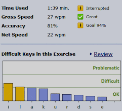

Accuracy percentage is the ratio of keys typed correctly to all keys typed. The higher the percentage, the fewer errors you have made. 100% means no mistakes.
Accuracy is calculated using the standard word length. For each word with an error you get a five keystroke penalty, regardless of the number of errors in the word.
To develop fluent typing, you should try to reach at least 90% accuracy at the end of each lesson. Goals used are 90% (easy), 94% (intermediary) and 98% (advanced).